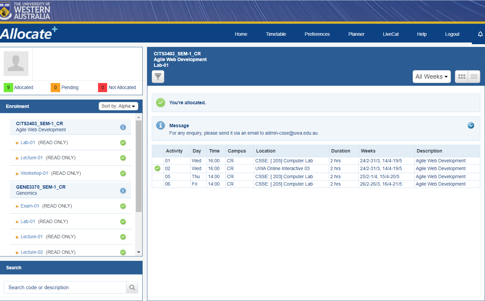

Enrolling on StudentConnect
Now that we're all set up, the next step is to simply enrol in our course on UWA's online student hub, StudentConnect.
Start by logging into the StudentConnect site which can be found here.
- Navigate to COURSE DETAILS > Online enrolment and click on "Begin online enrolment".
- Firstly, enter your nominated graduation year and completion period – for most people this would be 3 years (inclusive) from the time you begin your degree. For example, if you began your course in 2022, you would graduate at the end of 2024.
- Next, you may select your Unit Sets which relates to your major and second major. You will select your degree-specific major and your second degree major.
- Now refer to your study plan that we made in the previous guide. You will now select your units. You can search up units according to their unit code – e.g., CITS1401. Once you have all the units selected for both semesters 1 and 2, then checkout and those units will now be selected as the first units of your course. Consider first year sorted!
Class Allocation System
Now all that is left is for you to sort out your University timetable on UWA’s class allocation system, also known as CAS. You can access CAS at cas.uwa.edu.au. You can select preferences up to four for which times you would like certain classes (tutorials, labs, workshops, etc.) to be allocated for you. Certain classes such as lectures are often not changeable.
The Class Allocation System will look like the image below. Click on this image to be directed to the CAS UWA website.

What's Next?
- Congratulations! Now that you’ve finished enrolling at UWA, you can look into getting your own Campus Card! This can be done in-person from Student Central at UWA and the process begins online through studentconnect.
- Next, you have the freedom to access your very own student email which, as of 2020, is available on Microsoft Outlook and can also be accessed through studentconnect.
- Other things that you can now do involve making your own USI (Unique Student Identifier) and applying for the HECS-HELP loan scheme if you are a domestic student and wish to apply for governmental support for payment of your university course. You will need your tax-file number for this step and the setup is accessible once again through studentconnect.
- Finally, attend orientation! Before University begins in February each year, there is a week of orientation for new students to explore the campus, get involved with University Clubs and learn about their course. The key dates for orientation are available on the Unistart website here.